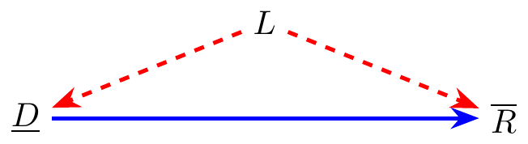
2 Causal Directed Acyclic Graphs
2.1 What is a Causal DAG?
First, a distinction: the Directed Acyclic Graphs (DAGs) discussed here will be specifically causal DAGs which, as the name suggests, convey causal information. In principle, DAGs can also be used to convey non-causal information (e.g. they are sometimes used to specify hierarchical models, which may or may not have causal interpretability), but in the context of this book, a “DAG” can always be understood to have causal semantics attached to it.
In the context of causal inference, DAGs consist of nodes, representing variables, and “directed edges” (a.k.a. arrows), representing causal dependencies between the variables. A proper DAG will contain only unidirectional arrows and will not contain directed loops (“acyclic”), corresponding to the notion that there can be no instantaneous causal feedback (feedback in general can be represented, but it must proceed in a temporal sequence). You will (very soon) see DAGs that seemingly violate this requirement of directedness by including bi-directional arrows. However, as will soon be explained, bi-directional arrows are only to be understood as a notational shortcut, not as a representation of instantaneous feedback.
2.2 DAG conventions in this book
Our graphical conventions in this book are intended to be similar to those used in the popular “dagitty” web application (Textor et al. (2016)), but with some modifications to better support readers who are red-green colorblind. The conventions we will use are:
- The pathway(s) of causal dependence that we wish to quantify will be shown in blue (whereas in dagitty they show in green).
- We won’t graphically distinguish between treatment nodes, outcome nodes, and other nodes. However, the previous convention makes it clear how to identify the treatment and outcome nodes, but determining where the blue arrows originate and terminate.
- Biasing pathways (or unblocked “backdoor paths” to use the technical term that we will discuss later) will be shown in red.
- Adjusted variables (variables that we control for in our analyses) will be depicted with rectangle-shaped nodes.
- Causal dependencies that are neither biasing nor of direct interest will be depicted in gray (or “grey”, if you prefer).
- Dashed lines to represent potential causal dependencies of a more speculative nature.
We illustrate these conventions in comparison to dagitty conventions in the following figures:
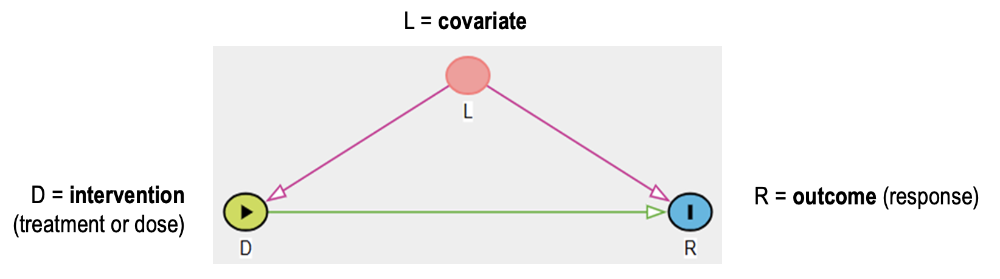
If we then wish to depict the same relationships, but with adjustment for \(L\), we will use:
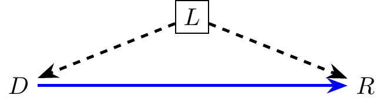
2.3 Examples of DAGs in Drug Development
2.3.1 Randomized Controlled Trial
This is probably the simplest and most common DAG describing the effect of an intervention, here the treatment \(D\), on an outcome or response \(R\). An intervention is a factor that can be actively manipulated to elicit a change in the outcome.
Examples of intervention are: dose, rescue medication; counter-example: race.
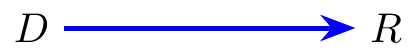
In this 2nd DAG, we see the data generation model corresponding to an RCT with precision covariate L. For instance, L can be a stratification factor. If L is expected to have a clear effect on R, it is sometimes referred to as a precision covariate. Please note the absence of arrow between L and D. Absence of arrow is synonym for absence of causal relationship.
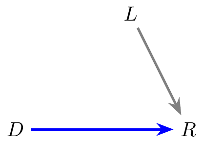
2.3.2 Common D-E-R DAGs
In pharmacometrics, a common causal structure links dose \(D\) to an exposure metric \(E\) (e.g. AUC or \(C_\text{max}\)) and then to a response \(R\). The following DAGs illustrate three important variants of this structure.
In the simplest case, the effect of \(D\) on \(R\) is fully mediated by \(E\). A mediator is a node on the pathway between intervention and outcome. Full mediation is a strong assumption.
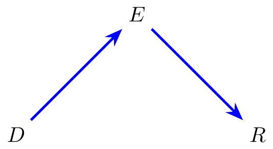
A direct path from \(D\) to \(R\) (bypassing \(E\)) can be added to capture effects not mediated through the measured exposure. The total causal effect of \(D\) on \(R\) then decomposes as: \[\text{Total effect} = \text{Direct effect } (D \to R) + \text{Indirect effect } (D \to E \to R).\] This distinction matters in practice: when the measured exposure (e.g. plasma AUC) is a poor proxy for exposure at the site of action — such as the brain or lungs — the D-to-E-to-R path alone may not capture the full effect of dose on response. In such settings, estimating the total effect of \(D\) on \(R\) directly is a more robust target.
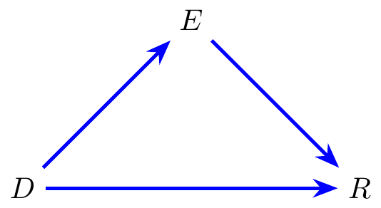
When a covariate \(L\) affects both \(E\) and \(R\), it confounds the exposure-response relationship, opening a biasing backdoor path \(E \leftarrow L \rightarrow R\). A concrete example: in an obesity indication, body weight (\(L\)) influences drug exposure (\(E\)) through its effect on pharmacokinetics, while also independently increasing the risk of cardiovascular events (\(R\)). A naïve exposure-response analysis would therefore conflate the drug effect with the background cardiovascular risk driven by body weight.
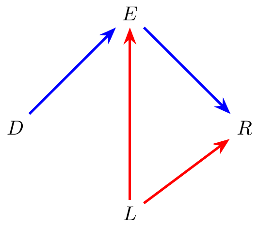
2.3.3 When to Condition on a Covariate \(L\)?
Whether conditioning on a covariate \(L\) helps, hurts, or is irrelevant depends entirely on its causal role relative to \(D\) and \(R\). Three canonical cases are illustrated below.
Confounder (\(L\) causes both \(D\) and \(R\)): the backdoor path \(D \leftarrow L \rightarrow R\) is open and induces bias. Conditioning on \(L\) blocks this path and is necessary for unbiased estimation of the \(D \to R\) effect.
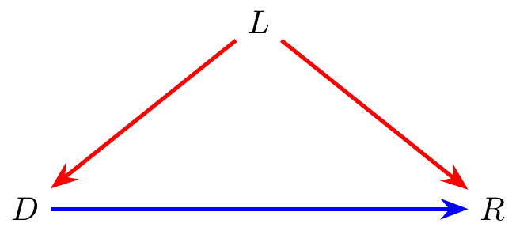
Collider (\(D\) and \(R\) both cause \(L\)): the path \(D \to L \leftarrow R\) is blocked by default. Conditioning on \(L\) opens this path and introduces bias where none existed. This is a common pitfall — conditioning on a variable that seems relevant can make things worse.
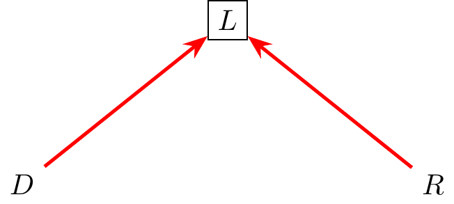
Irrelevant covariate (\(L\) has no causal connection to \(D\) or \(R\)): the path between \(D\) and \(R\) is unaffected whether or not we condition on \(L\). Conditioning on \(L\) neither removes nor introduces bias.
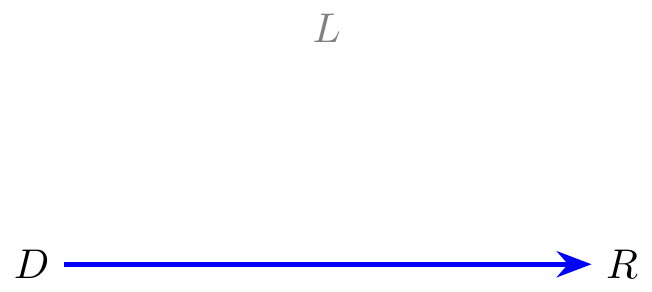
2.3.4 Confounding by Study and Ancestry
A common practice in pharmacometric analyses is to pool data across multiple clinical trials. Within each individual study, randomization ensures that treatment assignment \(D\) is independent of patient covariates. However, when studies are pooled, the variable \(\mathit{Study}\) becomes predictive of \(D\) — because different trials employed different dosing schemes — thereby breaking the exchangeability that randomization had provided within each study.
If patients of Asian ancestry are disproportionately enrolled in certain studies and ancestry independently affects the outcome \(Y\) (whether exposure or response), then the backdoor path \[D \leftarrow \mathit{Study} \rightarrow \mathit{Asian} \rightarrow Y\] is open and the estimate of \(D \to Y\) is confounded. Conditioning on \(\mathit{Asian}\) closes this path and restores exchangeability. Body weight (\(\mathit{WT}\)) and sex (\(\mathit{Sex}\)) play no active causal role in this simplified picture.
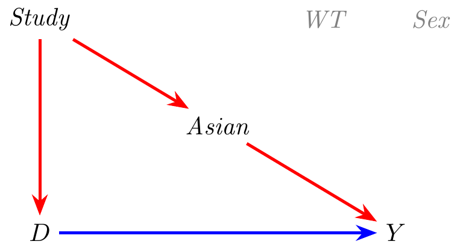
After conditioning on \(\mathit{Asian}\), the backdoor path is blocked and all edges along it are no longer biasing.
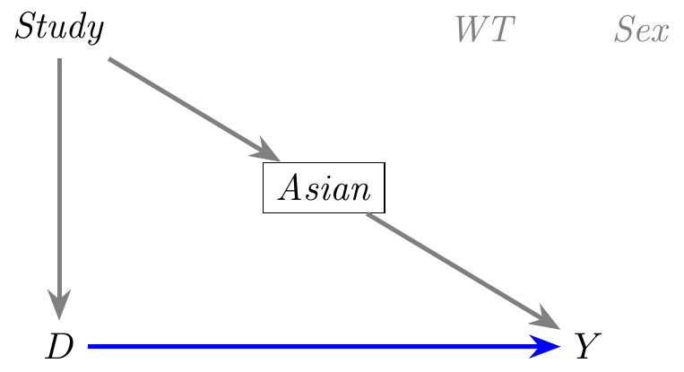
In practice, the picture is more complex. Body weight (\(\mathit{WT}\)) and sex (\(\mathit{Sex}\)) are also distributed differently across studies and ancestries: Asian patients tend to have lower body weight, and males and females differ systematically in weight. Both \(\mathit{Sex}\) and \(\mathit{Asian}\) independently affect \(Y\) through their influence on pharmacokinetics and pharmacodynamics. The resulting causal structure is shown below.
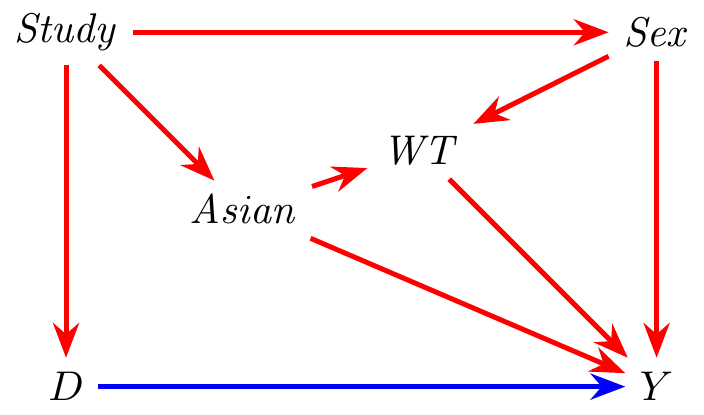
Four open backdoor paths now exist: \[D \leftarrow \mathit{Study} \rightarrow \mathit{Asian} \rightarrow Y, \qquad D \leftarrow \mathit{Study} \rightarrow \mathit{Asian} \rightarrow \mathit{WT} \rightarrow Y,\] \[D \leftarrow \mathit{Study} \rightarrow \mathit{Sex} \rightarrow Y, \qquad D \leftarrow \mathit{Study} \rightarrow \mathit{Sex} \rightarrow \mathit{WT} \rightarrow Y.\]
Conditioning on \(\mathit{Asian}\) blocks the first two; conditioning on \(\mathit{Sex}\) blocks the second two. The pair \(\{\mathit{Asian},\, \mathit{Sex}\}\) is therefore a sufficient adjustment set.
\(\mathit{WT}\) might seem a natural covariate to include — it is clinically meaningful, correlated with outcome, and commonly measured. However, \(\mathit{WT}\) is a collider on two otherwise- closed paths: \[D \leftarrow \mathit{Study} \rightarrow \mathit{Asian} \rightarrow \mathit{WT} \leftarrow \mathit{Sex} \rightarrow Y,\] \[D \leftarrow \mathit{Study} \rightarrow \mathit{Sex} \rightarrow \mathit{WT} \leftarrow \mathit{Asian} \rightarrow Y.\] Both arrows point into \(\mathit{WT}\) from different causal directions, so both paths are blocked by default. Conditioning on \(\mathit{WT}\) would open them and introduce a spurious association between \(\mathit{Asian}\) and \(\mathit{Sex}\) — a new source of bias. \(\mathit{WT}\) should therefore not be included in the adjustment set.
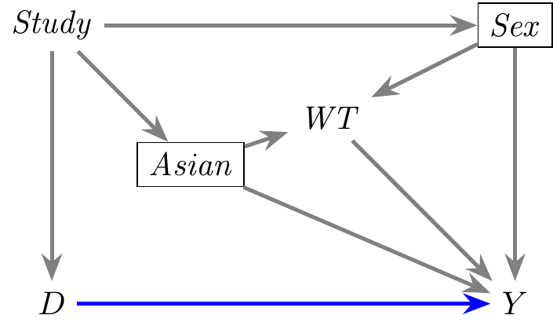
2.3.5 Trastuzumab in Gastric Cancer: Conounding due to Cachexia
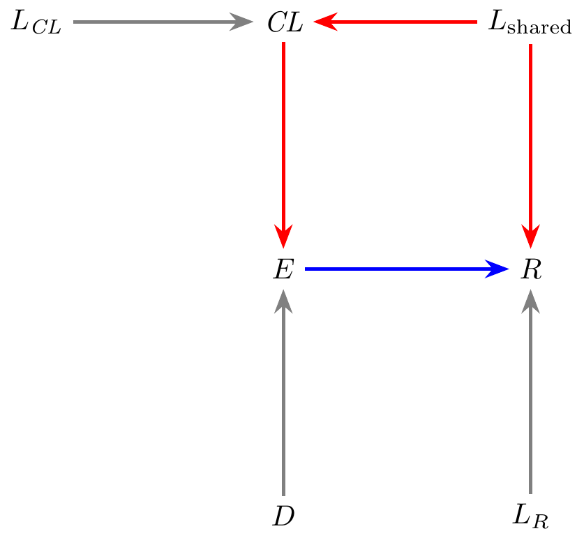
2.3.6 Immortal Time Bias
Immortal time bias is a form of selection bias that arises when patients are classified into a group only if they survived long enough to satisfy the group-membership criterion. The period between study entry and the moment of classification is immortal time for the members of that group — they cannot, by definition, have died during it. Crediting that person-time to one group but not the other distorts the Kaplan-Meier curves and inflates the apparent survival advantage.
Consider a retrospective analysis of ovarian cancer patients receiving first-line chemotherapy. CA125, a glycoprotein shed by tumor cells, is routinely measured at several cycles during treatment. A common analysis classifies patients as “low CA125” or “high CA125” based on whether their nadir CA125 value falls below a threshold at any point during the observation window. A naïve Kaplan-Meier analysis comparing overall survival between the two groups produces the following figure — a striking but biased result whose origin the DAG below will expose.
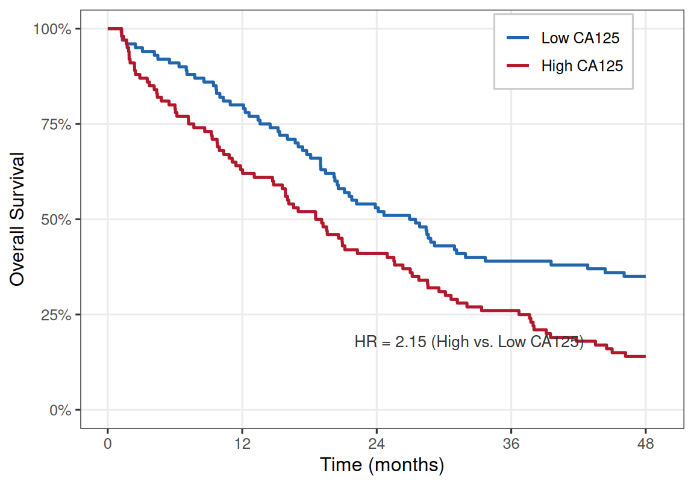
The striking separation between the curves is an artifact of a biased analysis — one that implicitly conditions on a collider. The causal structure is made precise in the following DAG, where \(D\) is the treatment, \(M\) the CA125 level measured at Week 9, \(S_0\) survival to Week 9, \(S_1\) overall survival at end of study, and \(U_F\) unmeasured patient frailty.
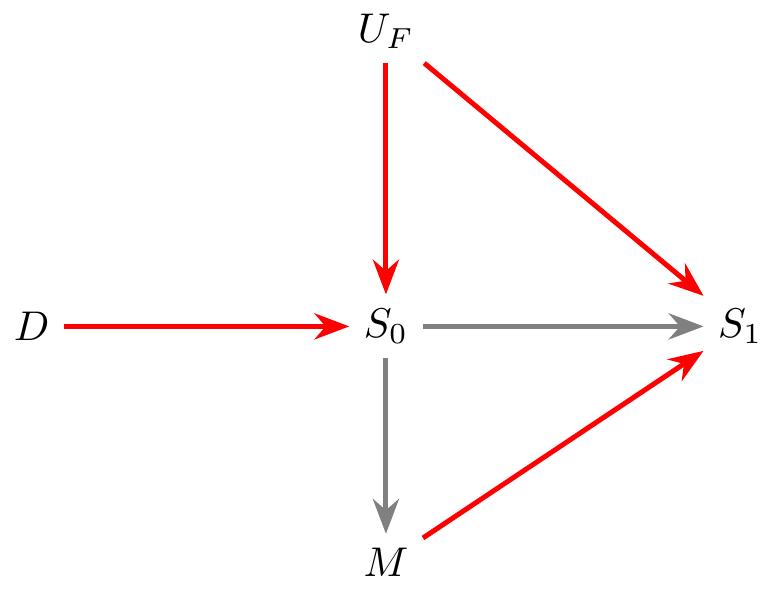
\(S_0\) is a collider: both treatment (\(D \to S_0\)) and unmeasured frailty (\(U_F \to S_0\)) influence whether a patient survives to Week 9. On the path \(D \to S_0 \leftarrow U_F\), the collider \(S_0\) blocks all information flow by default — no bias arises from this fork as long as \(S_0\) is left unadjusted.
\(M\), however, can only be observed in patients who survived to Week 9, so any analysis of \(M\) implicitly conditions on \(S_0 = 1\). This is precisely what the Kaplan-Meier analysis above does: by restricting to patients with a measured CA125, it conditions on the collider \(S_0\), opening the otherwise-closed path and inducing a spurious association between \(M\) and \(S_1\). More frail patients (\(U_F\) high) are less likely to reach Week 9; among those who do, the frailty distribution is selectively depleted. Since frailty independently predicts poor long-term survival (\(U_F \to S_1\)), the “low CA125” group — enriched with lower-frailty survivors — appears to have better overall survival regardless of its CA125 value. The KM plot above should therefore not be produced or interpreted as a genuine survival comparison.
This is a general problem in pharmacometric and clinical analyses whenever a subgroup is defined on the basis of post-baseline measurements. Patients classified as “PK-evaluable,” “ADA-positive,” or “biomarker-responders” must by definition have survived long enough — and remained on study long enough — to provide the post-baseline sample. The resulting evaluable population implicitly conditions on an intermediate survival node (\(S_0\)), opening the collider and introducing selection bias into any analysis of overall survival or long-term outcomes.